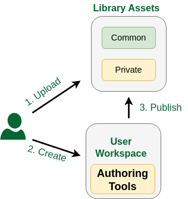

Frequently Asked Questions
Abreviations
| Term | Full Form |
|---|---|
| DT | Digital Twin |
| DTaaS | Digital Twin as a Service |
| PT | Physical Twin |
General Questions
What is DTaaS?
DTaaS is software platform on which you can create and run digital twins. Please see the features page to get a sense of the things you can do in DaaS.
What is the scope and current capabilities of DTaaS?
- DTaaS is a web based interface to allow you to invoke various tools related to work you want to perform with one or more DTs.
- DTaaS permits users to run DTs in their private workspaces. These user workspaces are based on Ubuntu 20.04 Operating system.
- DTaaS can help you create reusable DT assets only if DT asset authoring tools can work in Ubuntu 20.04 xfce desktop environment.
- DTs are just executables, as far as DTaaS is concerned. Users are not constrained to work with DTs in a certain way. The DTaaS suggests creation of DTs from reusable assets and provides a suggestive structure for DTs. The examples provide more insight into DTaaS way of working with DTs. But this suggested workflow is not binding on the users.
- DTs can be run as services with REST API from within user workspace which can help with service-level DT composition.
What can not be done inside DTaaS?
- DTaaS as such won't help you to install DTs that you get from elsewhere.
- The current user interface of DTaaS web application is heavily reliant on the use of Jupyter lab and notebook. The Digital Twins page has Create / Execute / Analyze sections but all point to Jupyter lab. Web interface. The functionality of these pages is still under development.
- DTaaS does not yet have DevOps like automation capabilities.
Is there any fundamental difference between commercial solutions like Ansys Twin Builder and DTaaS?
Commercial DT platforms like Ansys Twin Builder provide tight integration between models, simulation and sensors. This leads to fewer choices in DT design and implementation. In addition, there is a limitation of vendor lockin. On the other hand, DTaas lets users separate DT into reusable assets and combine these assets in a flexible way.
Do you provide licensed software like Matlab?
Proprietary and commercially licensed software is not available by default on the software platform. But users have private workspaces which are based on Linux-based xfce Desktop environment. Users can install proprietary and commercially licensed software in their workspaces. Please see a screencast of using Matlab Simulink within the DTaaS software. The licensed software installed by one user is not available to another user.
Digital Twin Assets
Can DTaaS be used to create new DT assets?
The core feature of DTaaS software is to help users create DTs from assets already available in the library.  However, it is possible for users to take advantage of services available in their workspace to install asset authoring tools in their own workspace. These authoring tools can then be used to create and publish new assets. User workspaces are private and are not shared with other users. Thus any licensed software tools installed in their workspace is only available to them.
Digital Twin Models
Can DTaaS create new DT models?
DTaaS is not a model creation tool. You can put model creation tool inside DTaaS and create new models. The DTaaS itself does not create digital twin models but it can help users create digital twin models. You can run Linux desktop / terminal tools inside the DTaaS. So you can create models inside DTaaS and run them using tools that can run in Linux. The Windows only tools can not run in DTaaS.
How can DTaaS help to design geometric model? Does it support 3D modeling and simulation?
Well, DTaaS by itself does not produce any models. DTaaS only provides a platform and an ecosystem of services to facilitate digital twins to be run as services. Since each user has a Linux OS at their disposal, they can also run digital twins that have graphical interface. In summary, DTaaS is neither a modeling nor simulation tool. If you need these kinds of tools, you need to bring them onto the platform. For example, if you need Matlab for your work, you need to bring he licensed Matlab software.
Can DTaaS support only the information models (or behavioral models) or some other kind of models?
The DTaaS as such is agnostic to the kind of models you use. DTaaS can run all kinds of models. This includes behavioral and data models. As long as you have models and the matching solvers that can run in Linux OS, you are good to go in DTaaS. In some cases, models and solvers (tools) are bundled together to form monolithic DTs. The DTaaS does not limit you from running such DTs as well. DTaaS does not provide dedicated solvers. But if you can install a solver in your workspace, then you don't need the platform to provide one.
Does it support XML-based representation and ontology representation?
Currently No. We are looking for users needing this capability. If you have concrete requirements and an example, we can discuss a way of realizing it in DTaaS.
Communication Between Physical Twin and Digital Twin
How can DTaaS control the physical entity? Which technologies it uses for controlling the physical world?
At a very abstract level, there is a communication from physical entity to digital entity and back to physical entity. How this communication should happen is decided by the person designing the digital entity. The DTaaS can provide communication services that can help you do this communication with relative ease. You can use InfluxDB, RabbitMQ and Mosquitto services hosted on DTaaS for two communication between digital and physical entities.
How would you measure a physical entity like shape, size, weight, structure, chemical attributes etc. using DTaaS? Any specific technology used in this case?
The real measurements are done at physical twin which are then communicated to the digital twin. Any digital twin platform like DTaaS can only facilitate this communication of these measurements from physical twin. The DTaaS provides InfluxDB, RabbitMQ and Mosquitto services for this purpose. These three are probably most widely used services for digital twin communication. Having said that, DTaaS allows you to utilize other communication technologies and services hosted elsewhere on the Internet.
How can real-time data differ from static data and what is the procedure to identify dynamic data? Is there any UI or specific tool used here?
DTaaS can not understand the static or dynamic nature of data. It can facilitate storing names, units and any other text description of interesting quantities (weight of batter, voltage output etc). It can also store the data being sent by the physical twin. The distinction between static and dynamic data needs to be made by the user. Only metadata of the data can reveal such more information about the nature of data. A tool can probably help in very specific cases, but you need metadata. If there is a human being making this distinction, then the need for metadata goes down but does not completely go away. In some of the DT platforms supported by manufacturers, there is a tight integration between data and model. In this case, the tool itself is taking care of the metadata. The DTaaS is a generic platform which can support execution of digital twins. If a tool can be executed on a Linux desktop / commandline, the tool can be supported within DTaaS. The tool (ex. Matlab) itself can take care of the metadata requirements.
Data Management
Can DTaaS collect data directly from sensors?
Yes via platform services.
Does DTaaS support data collection from different sources like hardware, software and network? Is there any user interface or any tracking instruments used for data collection?
The DTaaS provids InfluxDB, RabbitMQ, MQTT and MongoDB services. Both the physical twin and digital twin can utilize these protocols for communication. The IoT (time-series) data can be collected using InfluxDB and MQTT broker services. There is a user interface for InfluxDB which can be used to analyze the data collected. Users can also manually upload their data files into DTaaS.
Is DTaaS able to transmit data to cloud in real time?
Yes via platform services.
Which transmission protocol does DTaaS allow?
InfluxDB, RabbitMQ, MQTT and anything else that can be used from Cloud service providers.
Does DTaaS support multisource information and combined multi sensor input data? Can it provide analysis and decision-supporting inferences?
You can store information from multiple sources. The existing InfluxDB services hosted on DTaaS already has a dedicated Influx / Flux query language for doing sensor fusion, analysis and inferences.
Which kinds of visualization technologies DTaaS can support (e.g. graphical, geometry, image, VR/AR representation)?
Graphical, geometric and images. If you need specific licensed software for the visualization, you will have to bring the license for it. DTaaS does not support AR/VR.
Platform Native Services on DTaaS Platform
Is DTaaS able to detect the anomalies about-to-fail components and prescribe solutions?
This is the job of a digital twin. If you have a ready to use digital twin that does the job, DTaaS allows others to use your solution.
Comparison with other DT Platforms
All the DT platforms seem to provide different features. Is there a comparison chart?
Here is a qualitative comparison of different DT integration platforms:
Legend: high performance (H), mid performance (M) and low performance (L)
| DT Platforms | License | DT Development Process | Connectivity | Security | Processing power, performance and Scalability | Data Storage | Visualization | Modeling and Simulation |
|---|---|---|---|---|---|---|---|---|
| Microsoft Azure DT | Commercial Cloud | H | H | H | M | H | H | H |
| AWS IOT Greengrass | Open source commercial | H | H | H | M | H | H | H |
| Eclipse Ditto | Open source | M | H | M | H | H | L | L |
| Asset Administration Shell | Open source | H | H | L | H | M | L | M |
| PTC Thingworx | Commercial | H | H | H | H | H | M | M |
| GE Predix | Commercial | M | H | H | M | L | M | L |
| AU's DTaaS | Open source | H | H | L | L | M | M | M |
Adopted by Tanusree Roy from Table 4 and 5 of the following paper.
Ref: Naseri, F., Gil, S., Barbu, C., Cetkin, E., Yarimca, G., Jensen, A. C., ... & Gomes, C. (2023). Digital twin of electric vehicle battery systems: Comprehensive review of the use cases, requirements, and platforms. Renewable and Sustainable Energy Reviews, 179, 113280.
All the comparisons between DT platforms seems so confusing. Why?
The fundamental confusion comes from the fact that different DT platforms (Azure DT, GE Predix) provide different kind of DT capabilities. You can run all kinds of models natively in GE Predix. In fact you can run models even next to (on) PTs using GE Predix. But you cannot natively do that in Azure DT service. You have to do the leg work of integrating with other Azure services or third-party services to get the kind of capabilities that GE Predix natively provides in one interface. The takeaway is that we pick horses for the courses.
GDPR Concerns
Does your platform adhere to GDPR compliance standards? If so, how?
The DTaaS software platform does not store any personal information of users. It only stores username to identify users and these usernames do not contain enough information to deduce the true identify of users.
Which security measures are deployed? How is data encrypted (if exists)?
The default installation requires a HTTPS terminating reverse proxy server from user to the DTaaS software installation. The administrators of DTaaS software can also install HTTPS certificates into the application. The codebase can generate HTTPS application and the users also have the option of installing their own certificates obtained from certification agencies such as LetsEncrypt.
What security measures does your cloud provider offer?
The current installation of DTaaS software runs on Aarhus University servers. The university network offers firewall access control to servers so that only permitted user groups have access to the network and physical access to the server.
How is user access controlled and authenticated?
There is a two-level authorization mechanism in place in each default installation of DTaaS. The first-level is HTTP basic authorization over secure HTTPS connection. The second-level is the OAuth PKCE authorization flow for each user. The OAuth authorization is provider by a Gitlab instance. The DTaaS does not store the account and authorization information of users.
Does you platform manage personal data? How is data classified and tagged based on the sensitivity? Who has access to the critical data?
The platform does not store personal data of users.
How are identities and roles managed within the platform?
There are two roles for users on the platform. One is the administrator and the other one is user. The user roles are managed by the administrator.